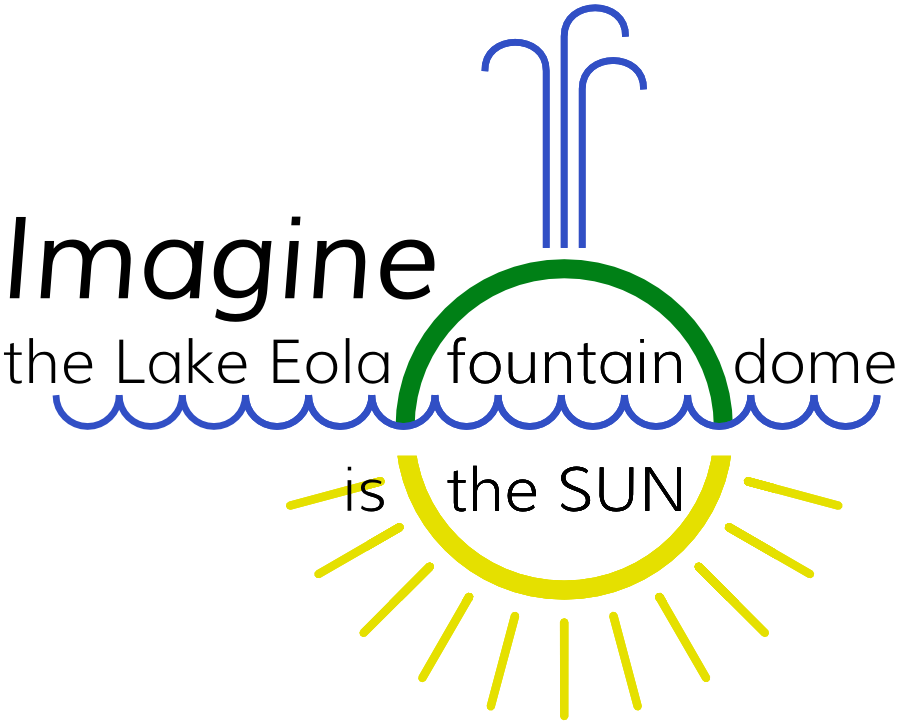

Space is big. Really big. You just won’t believe how vastly, hugely, mindbogglingly big it is. I mean, you may think it’s a long way down the road to the [drugstore], but that’s just peanuts to space.
Our minds are tuned to think in terms of everyday events. We reason in sizes like inches and miles, and seconds and weeks.
We aren’t very good at considering the very small and very big, because we don’t have any practice. That’s bad because the universe extends beyond what we see every day and beyond ordinary experience. Most of reality is too deep to fathom, if our mental toolbox is shallow.
We don’t have to be hobbled by our inexperience with the extraordinary. We should make exploring a few grand ideas normal and simple. Let’s make something to get a sense of our celestial backyard.
Almost everyone has little lies stuck in their heads about how we fit in our little corner of the cosmos. The models we learned from have problems that do more harm than good. A proper model of the solar system can never fit between your hands, or even in one room. Space is big.
Bad models shrink space.
Let’s make a great model! By great we mean both good, in that it will be correct and useful to inform and inspire, but also we mean great to mean big. This will be the largest model of the solar system in the United States. Fourth largest in the world.
We are going to use our city and region and state to make a model that brings extraordinary scale into intuitive grasp, and inspires citizens to think in perspectives outside the mundane.
The fountain in Lake Eola represents Orlando in many minds, and the fountain dome is a perfect stand-in for the Sun, an anchoring center of our metropolis and of our model star-system.

Imagining the Sun as the fountain dome implies a scale that places planets and their moons in and around Orlando. By fantastic coincidence, almost all orbits cross a public school or park or public space. See the map of orbits and prospective planet locations.
Jump to the map.
Young citizens will paint, sculpt, or draw these planets in their orbital tracks, where we walk everyday, alongside signs explaining the model and inviting passers-by to consider aspects of it. Every planet will be adopted by a middle-school, and its part in the model will be designed and placed by students, guided by scientists and teachers.
We expect to start building in the 2019 – 2020 school year. When we get closer to that time, we have a role for school administrators, for teachers, for students, and for government officials.
Keep in touch! This is still in its infancy and lots needs to happen. Get email updates or send the organizers a note.
Most important: Let friends know about this project. You surely know some education- or science- or art-nerd who would love to know about this project. E-mail them or use the buttons to share it. This can’t grow unless you let people know.